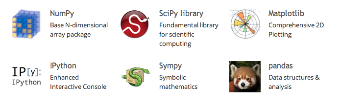

Introduction to
Python for Science:
Overview of numpy, scipy and matplotlib
By Christine Doig @ch_doig
About you
- Background:
- Software/Developers/CS?
- Scientist?
- Engineers?
- Business?
- Other?
- Experience:
- Matlab?
- Programming languages?
Objectives
- Why Python for Science?
- Python Scientific Computing Resources
- Overview of Numpy, Scipy and Matplotlib libraries
Python for Science
Why Python for science?
- Simplicity and ease of writing code in Python
- Open Source
- Reproducibility: Sharing results, code and "research paper" with IPython notebook
- Run time code: C or FORTRAN can be interfaced with Python
- Modules for specific tasks can be easily developed and distributed
Scientific Computing in Python
Scipy: Python-based ecosystem of open-source software for mathematics, science, and engineering.
Annual conferences for scientists using Python:
- SciPy: Austin, Texas, July 6-12.
- EuroSciPy: Cambridge, UK, Aug. 27-31.
Python for Science
Most Generally Useful Modules
Python for Science
Other modules
https://wiki.python.org/moin/NumericAndScientific
Examples:
- Biology: Biopython
- Astrology: astropy
- Graphs/Network analysis: graph-tool
- Machine Learning: Scikit-learn
- Natural Language Processing: NLTK
Numpy
Numpy
Provides powerful numerical arrays objects, and routines to manipulate them. http://www.numpy.org/
Tutorial:
Scipy
Scipy
Tools for a number of common problems in numerical analysis:
- Basic functions
- Special functions (scipy.special)
- Integration (scipy.integrate)
- Optimization (scipy.optimize)
- Interpolation (scipy.interpolate)
- Fourier Transforms (scipy.fftpack)
- Signal Processing (scipy.signal)
- Linear Algebra (scipy.linalg)
- Sparse Eigenvalue Problems with ARPACK
- Compressed Sparse Graph Routines scipy.sparse.csgraph
- Spatial data structures and algorithms (scipy.spatial)
- Statistics (scipy.stats)
- Multidimensional image processing (scipy.ndimage)
- File IO (scipy.io)
- Weave (scipy.weave)
Matplotlib
Matplotlib
Python Package for 2D graphics
Note: matplotlib.pyplot is a collection of command style functions that make matplotlib work like MATLAB